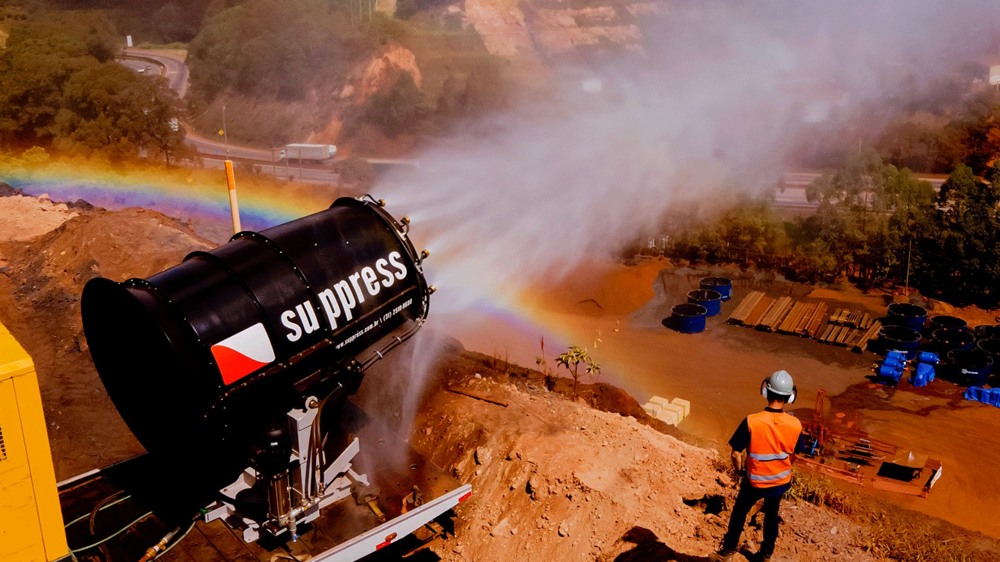
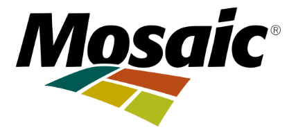
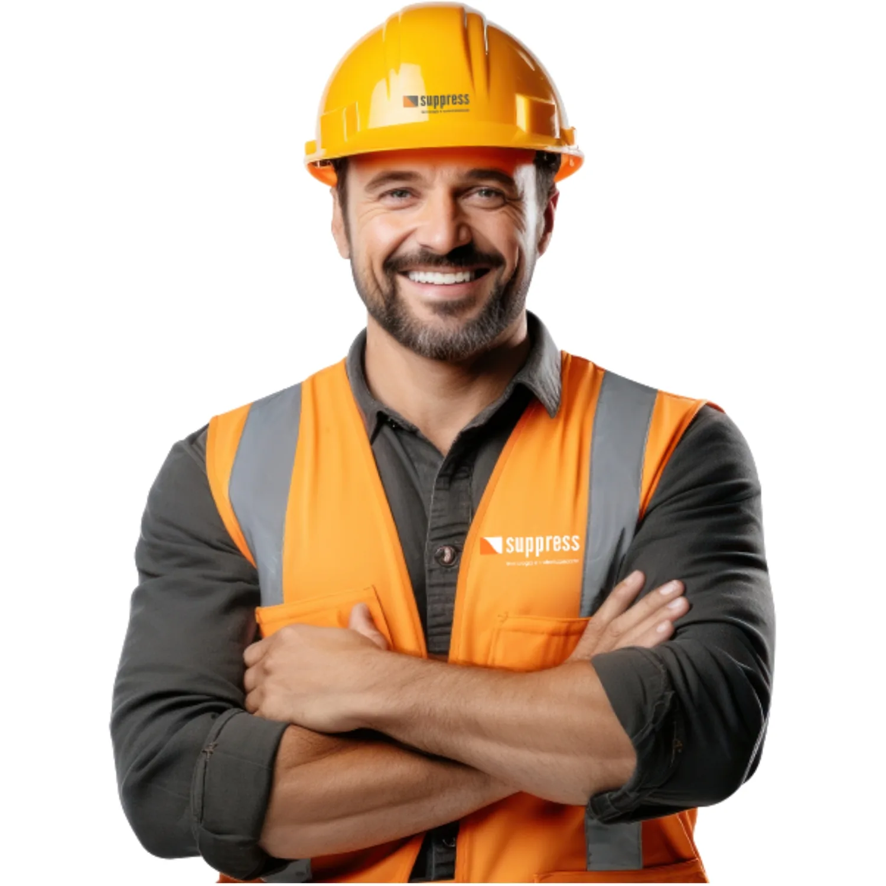
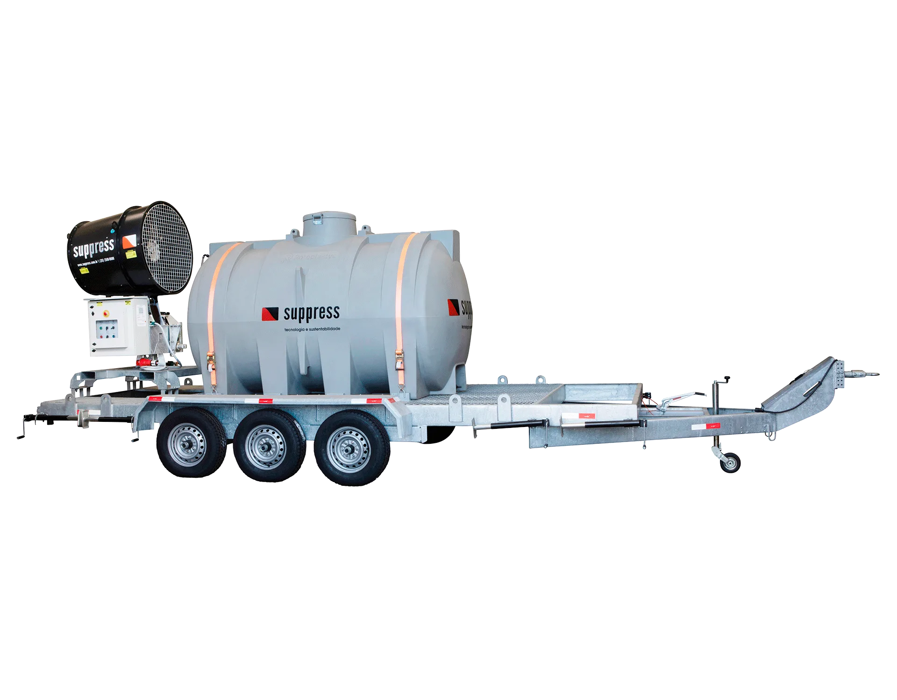
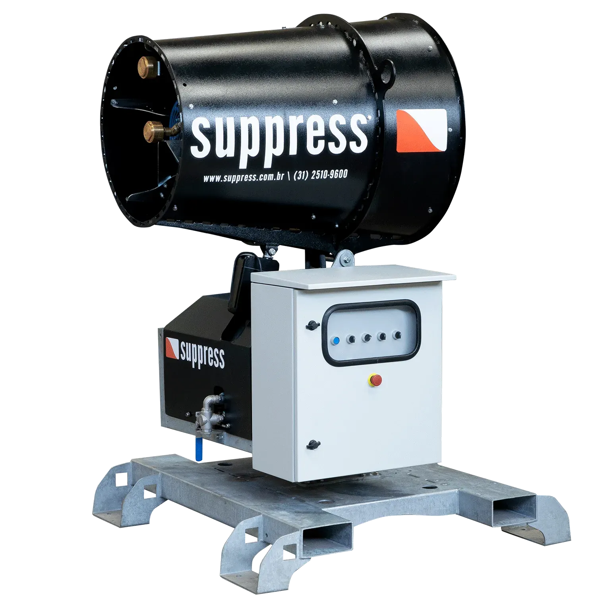
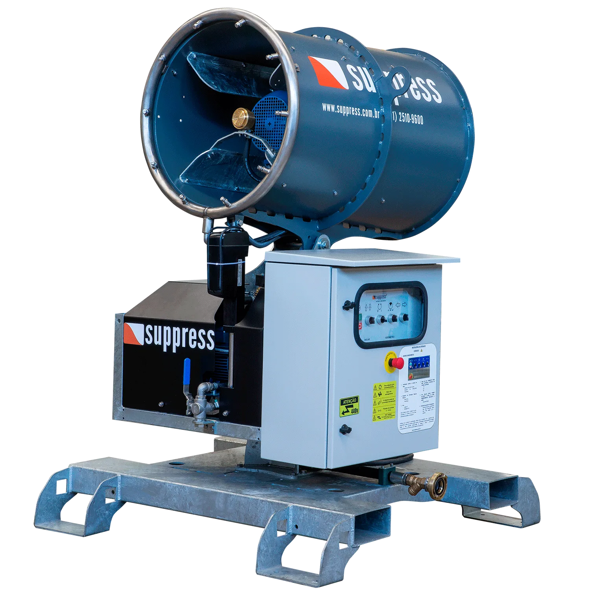
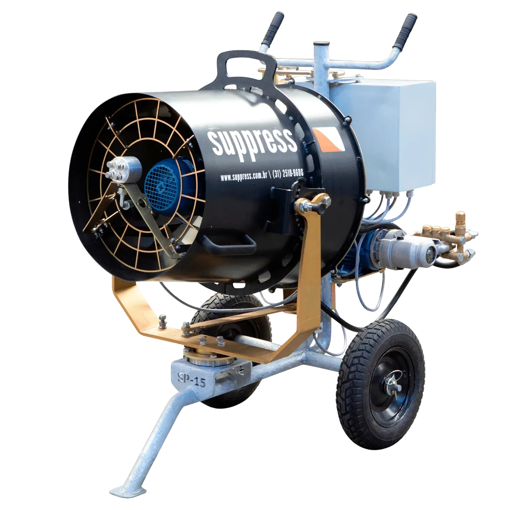
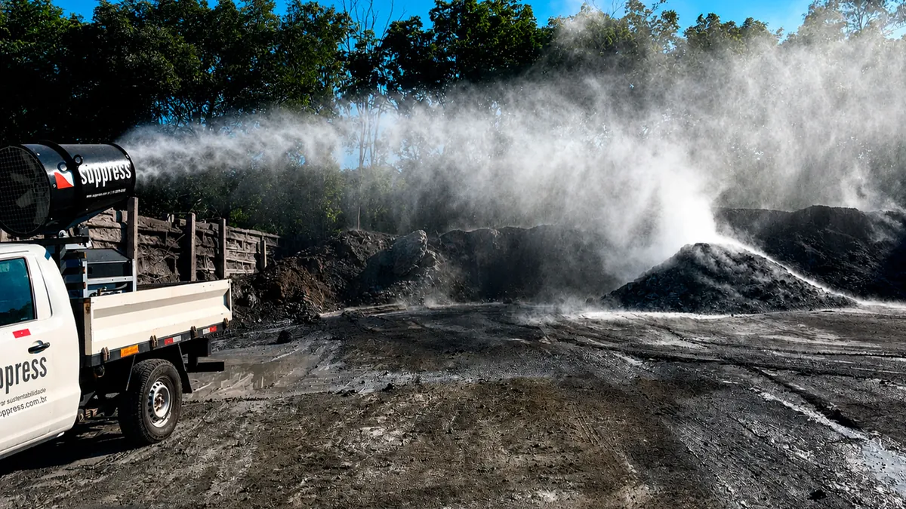

Aumento na manutenção de máquinas e filtros
A poeira em excesso acelera o desgaste de componentes e entope sistemas críticos.

A Suppress é a única fabricante brasileira especializada em canhões de névoa, soluções robustas, sustentáveis e em conformidade com NR10 e NR12.
 AMG Brasil
AMG Brasil
 Anglo American
Anglo American
 ArcelorMittal
ArcelorMittal
 Bamin
Biancogres
Bamin
Biancogres
 Braskem
CS Portos
Braskem
CS Portos
 CSN
Copersucar
CSN
Copersucar
 Duratex
Ecko
Elfusa
Duratex
Ecko
Elfusa
 Eneva
Ferrous
Galvani
Gerdau
Eneva
Ferrous
Galvani
Gerdau
 Hydro
Hydro
 Lhoist
Lótus
Lhoist
Lótus
 Minas Mineração
Minas Mineração

Mosaic Porto Sudeste Porto do Açu SM Minérios
Salum Construções
SM Minérios
Salum Construções
 Samarco
Samarco
 Sigma Lithium
Sigma Lithium
 Ternium
Tupy
Ternium
Tupy
 Usiminas
Usiminas
 VLI
Vale
Viena Siderurgica SA
VLI
Vale
Viena Siderurgica SA
Veja como nossa engenharia, fabricação nacional e suporte técnico se unem para entregar soluções robustas de controle de poeira industrial.
Conheça nossa históriaVocê sabe identificar quando a poeira está comprometendo a performance da sua operação?
Solicitar DiagnósticoA poeira em excesso acelera o desgaste de componentes e entope sistemas críticos.
Poeira fina pode causar doenças ocupacionais como asma, rinite e até silicose.
A legislação brasileira é clara: operação com emissão excessiva de particulados pode ser interrompida e multada.
Ambientes com acúmulo de poeira reduzem a eficiência e aumentam o risco de acidentes.
Imagem da empresa prejudicada junto à comunidade ou investidores.
A tecnologia de névoa da Suppress também atende demandas específicas fora do escopo de supressão de particulado.

Canhões de névoa utilizados para climatizar ambientes abertos em shows, festivais e eventos esportivos, proporcionando conforto térmico ao público.
Ver aplicação →
Canhões de névoa de alta vazão (evaporadores) aceleram a evaporação de efluentes em barragens, auxiliando no manejo hídrico e na segurança de barragens.
Ver aplicação →
Nebulização de soluções desinfetantes e neutralizadores de odor em estações de tratamento, aterros e áreas industriais.
Ver aplicação →
Climatização de aviários e granjas, controle sanitário e redução de estresse térmico em rebanhos com névoa de baixa pressão.
Ver aplicação →Projeto, produção e suporte 100% brasileiros, sem dependência de importação.
Dimensionamento técnico conforme layout, vazão e tipo de particulado da sua planta.
Pós-venda real, peças e manutenção em todo o Brasil para manter sua operação rodando.
Mais de uma década atuando em mineração e indústria pesada, com centenas de equipamentos instalados.

Trailer SP-55 semi-autônomo com canhão, tanque de 6.000 L e gerador 70 KVA. Autonomia de 4 horas.






Passe o mouse sobre a imagem para revelar o resultado após a ação dos canhões de névoa Suppress.

Antes DepoisAtendimento consultivo gratuito. Solução dimensionada para a sua operação.
Preencha os dados e nossa equipe técnica entra em contato.
Recebemos seus dados. Nossa equipe técnica entrará em contato em até 48h com seu diagnóstico.
Conheça os principais tipos de poeira gerados em operações industriais e por que o controle é essencial para a saúde dos trabalhadores.
Equipamentos projetados, fabricados e testados no Brasil para garantir operação segura e dentro da legislação.
Entenda por que a tecnologia de névoa superou os canhões aspersores tradicionais no controle de particulados.